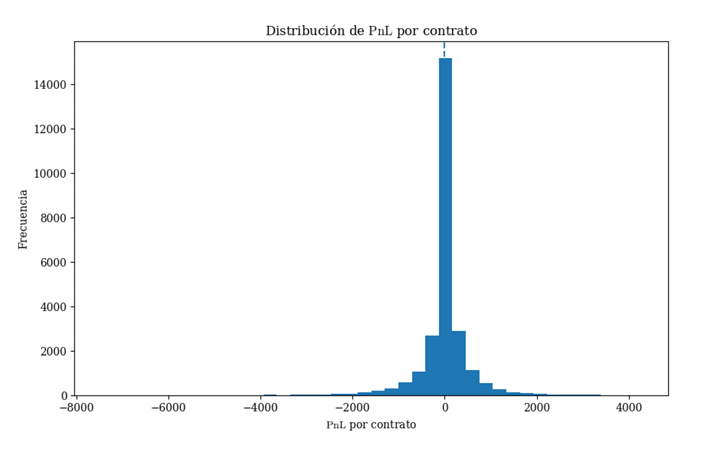
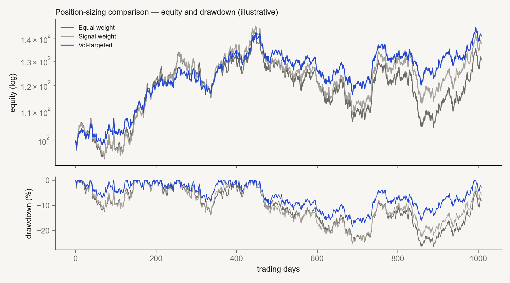
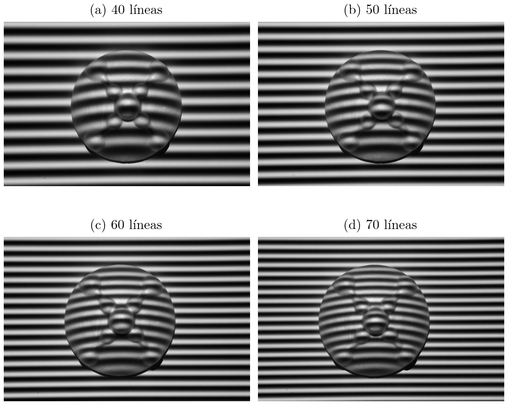
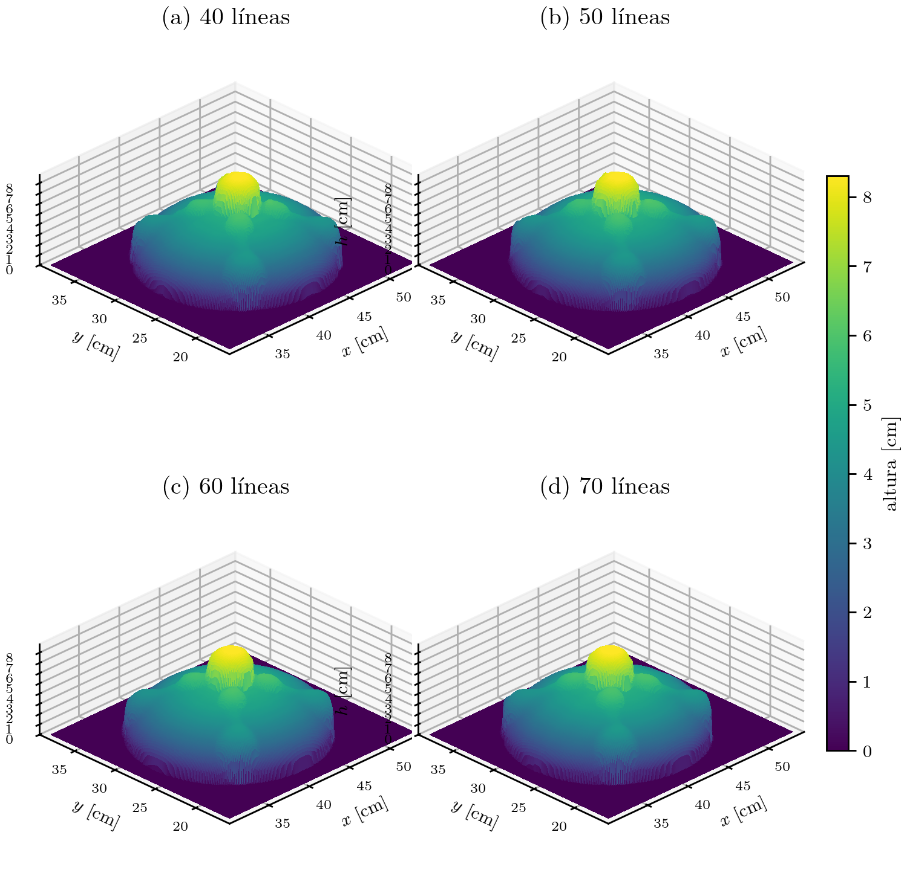
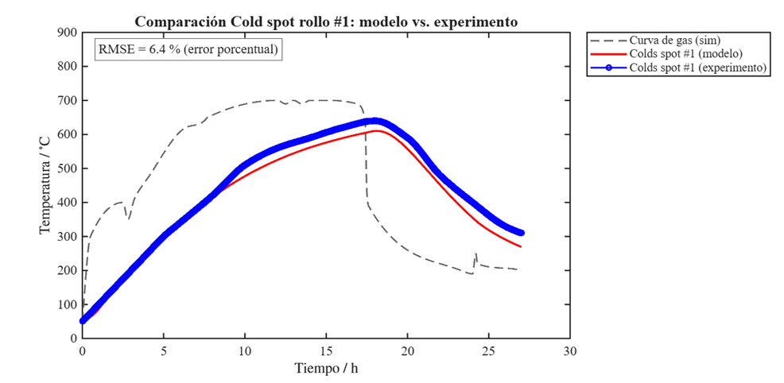
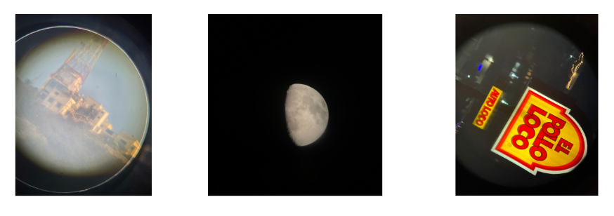
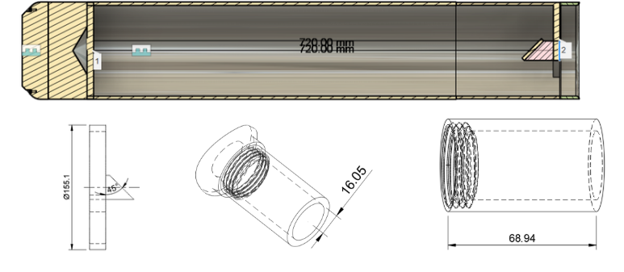
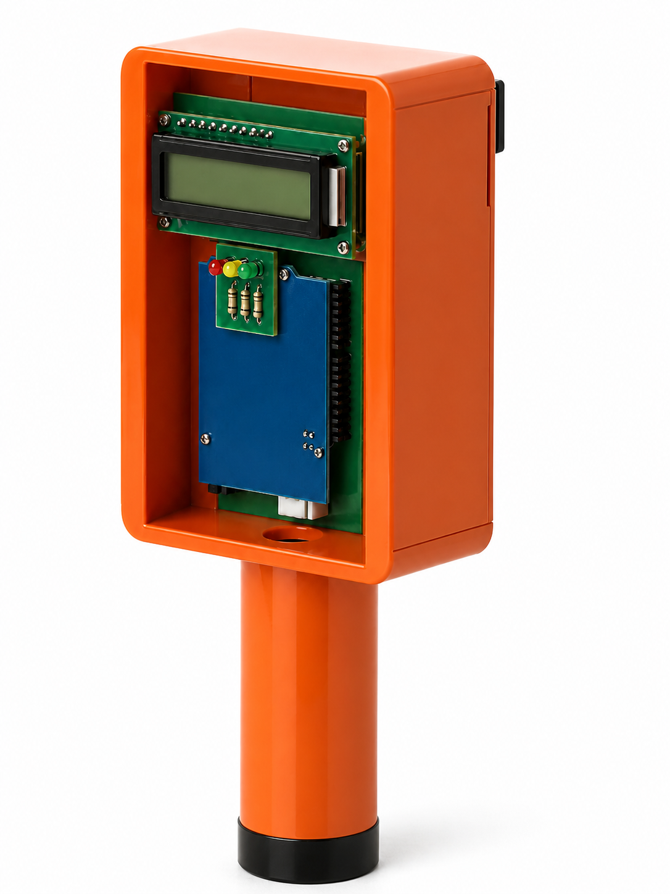

Engineering physics at Tec de Monterrey. Computational modeling, nonlinear dynamical
systems, scientific simulation, and applied machine learning.
Projects
Applied engineering, scientific computing, and instrumentation work — physics-based
modeling, numerical methods, machine learning, and computational tools.
RiskGate: Portfolio and Options Risk System
Quantitative finance
|
Python, GARCH, Monte Carlo, Alpaca API
Co-developed a Python-based decision-support system integrating equity backtesting,
Black–Scholes option valuation with GARCH volatility, statistical arbitrage,
position sizing, and automated paper trading through Alpaca.
Approach. The system produces a 0–100 approval score
combining market regime, technical signals, option quality, and process discipline,
with hard stops and risk-budget-based sizing. Strategies were evaluated across nine
equities using 2022–2026 market data, 10,000 Monte Carlo simulations, and
paper-trading experiments, while documenting concentration, execution, and model
risks.


3D Reconstruction by Fringe Projection Profilometry
Design and implementation of a full optical profilometry pipeline that reconstructs
the three-dimensional shape of real objects from projected fringe patterns. The
system combines an experimental projection setup with a complete numerical
processing chain.
Approach. Four-step phase-shifting was used to extract
the wrapped phase, followed by phase unwrapping, geometric calibration, and a height
model to convert phase into physical depth. Robust filtering and object masking were
applied to clean the measurements, and the method was validated against a reference
sphere to quantify reconstruction accuracy.


Rotary Cutter Dynamic Model
John Deere collaboration
|
Python, NumPy, Matplotlib, Tkinter
Complete dynamic modeling of a rotary cutter system using the Euler–Lagrange
formalism with dissipative Rayleigh terms. The system is modeled as a set of coupled
nonlinear differential equations describing the rotational motion of the disk and
blades under realistic operating conditions.
Approach. Numerical integration via fourth-order
Runge–Kutta to simulate the system's response, enabling analysis of torque
requirements, blade dynamics, and energy dissipation.
Heat Diffusion in Steel Annealing
Ternium collaboration
|
MATLAB, heat equation
Numerical modeling of heat diffusion in steel coils during the annealing process used
in industrial bell furnaces. A physically motivated diffusion model was implemented
to capture the transient thermal behavior of the material under controlled furnace
conditions.
Approach. The project emphasizes the relationship between
thermal diffusivity, geometry, and process time, providing insight into how annealing
duration can be optimized without compromising material quality.

Optical Telescope Construction
Experimental optics
|
Optical design, ray tracing, Python, uncertainty analysis
Complete design, construction, calibration, and characterization of a functional
optical telescope. The project includes theoretical calculations of magnification,
focal lengths, and resolution, as well as ray-tracing simulations based on the
physical dimensions of the prototype.
Approach. Experimental calibration techniques were applied
to quantify measurement uncertainty and image quality, documenting both the
theoretical framework and the experimental methodology.


Wireless Luminance Meter for Displays
Electronic instrumentation, team project
|
Arduino/C++, MATLAB, ThingSpeak, HTML/JS
Design and construction of a handheld wireless instrument for measuring display
luminance, combining a VEML7700 digital sensor with an LDR reference on an Arduino
UNO R4 WiFi. The device includes an LCD, LED range indicators, and a 3D-printed
ergonomic housing, and was validated through an experimental characterization of
linearity, hysteresis, repeatability, and uncertainty.
My role. I was mainly responsible for the software and
connectivity: the microcontroller code for acquisition, processing, and state
indication; the wireless link that logs measurements to the ThingSpeak IoT platform;
and the visualization interfaces, including a MATLAB GUI and a custom live web
dashboard.

Exoplanet Detection Using Neural Networks
Astrophysics and machine learning
|
Python, TensorFlow, Lightkurve, NumPy
Implementation of an automated pipeline for the classification of exoplanet transit
signals from TESS light-curve data. Physical preprocessing techniques, including
detrending and period detection, are combined with a one-dimensional convolutional
neural network.
Approach. The model outputs probabilistic classifications
distinguishing confirmed exoplanets from false positives, packaged as a standalone
executable application.
Stochastic Optimization of Inventory and Pricing Policies
Machine learning and metaheuristics
|
Python, neural networks, Monte Carlo, genetic algorithms
An integrated framework for the stochastic optimization of inventory management and
pricing strategies. The methodology combines predictive modeling, Monte Carlo
simulation, and hybrid optimization techniques to address uncertainty and
variability in demand.
Approach. A neural network model forecasts demand based on
historical data, capturing nonlinear relationships and temporal patterns. These
predictions are embedded into a stochastic simulation of daily operations,
evaluating system performance under fluctuating conditions. Optimization is
performed using a genetic algorithm to explore the decision space, followed by
simulated annealing to refine solutions and improve convergence.
Development of a simulated-compression algorithm for maximizing the packing fraction
of hard disks confined within a two-dimensional box. The algorithm determines dense,
non-overlapping configurations by stochastically optimizing both particle positions
and the effective size of the containing domain.
Approach. The algorithm proposes random displacements of
particles, followed by an evaluation of an objective function that penalizes overlaps
and inefficient spatial arrangements. Configuration updates are accepted or rejected
according to a Metropolis-type criterion, while a compression mechanism gradually
reduces the confining box size. As the temperature decreases, the algorithm
transitions from exploratory stochastic motion to deterministic refinement.